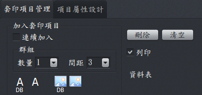
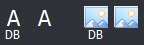
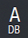
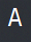
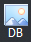

文件內容設計-套印項目管理
套印項目泛指要印於文件上面的字串或圖檔。套印項目新增或刪除由此工作頁進行，套印項目可分為可改變內容及不可改變內容等2種類型。

套印項目管理工作頁
套印項目管理操作說明
- 請先選擇(4選1)

您要的套印項目後，再於文件上面適當位置，用滑鼠點擊即可加入套印項目。
- 連續加入：打勾後，再選擇套印類型，就能在文件上面，無限制的加入套印項目，這種方式加入的套印項目互為獨立沒有群組關係。
- 數量：將有群組關係的套印項目一次加入至文件;例如日期分割為年、月、日，可以一次加入3個套印項目。
- 間距：使用預設值，加入套印項目後，再視需要再行調整即可。
- 與「數量」配合使用，若數值太小，所有套印項目可能會重疊在一起。
- 單位是mm，1公分等於10 mm。
- 刪除：先點選某個套印項目，再按下刪除，即可以刪除該套印項目。
- 清空：清空所有的套印項目。項目編號會從1開始。
- 套印類型
-

資料字串：於輸入資料時動態改變內容，例如日期。
-

一般字串：用於固定不變的字串，例如「禁止背書轉讓」。
-

資料圖檔：可以動態改變其內容，例如列印員工識別證時，每個人的相片圴不相同。
-
一般圖檔：用於固定不變的圖檔內容，例如「平行線」、商標。
- 列印：可設定套印項目是否要列印。